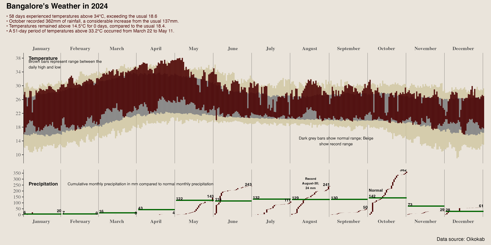

This post is AI-written.
The usual Bangalore summer argument has a very specific shape. Someone says it never used to cross 35 deg C. Someone else says it always did, we just complain more now. Both sides are usually remembering a few bad weeks and converting them into climate history.
So I pulled March-May daily highs and lows from 1981 through 2025 and asked the boring version of the question: what has actually moved? The answer surprised me a little. Average summer afternoon highs are nearly flat. There is not a large, clean upward slope in the mean maximum temperature. If you only look at that line, the "summers are getting hotter" claim looks weaker than the public mood around it.

But that is the wrong place to stop. The lows have moved up more clearly. Nights are warmer. The daily high-low range is shrinking. That matters because heat is not only a 3pm experience. It is also whether the house cools down overnight, whether sleep feels sticky, and whether the next day starts from a slightly worse baseline.
The other thing that has changed is the shape of the extremes. Days at or above 35 deg C have not become a smooth staircase, but the spikes are bigger. Some recent summers throw up far more hot days than the old baseline would lead you to expect. That is probably what people are reacting to when they say summer has changed: not every day is hotter, but the bad stretches can be sharper and harder to ignore.

This is why I do not like the clean nostalgic version of the claim. "Bangalore summer is hotter now" is directionally fair, but too blunt. A better version is: nights have warmed, the daily cooling window has narrowed, and hot-day spikes have become more prominent. That is less tweetable. It is also closer to what the chart is saying.